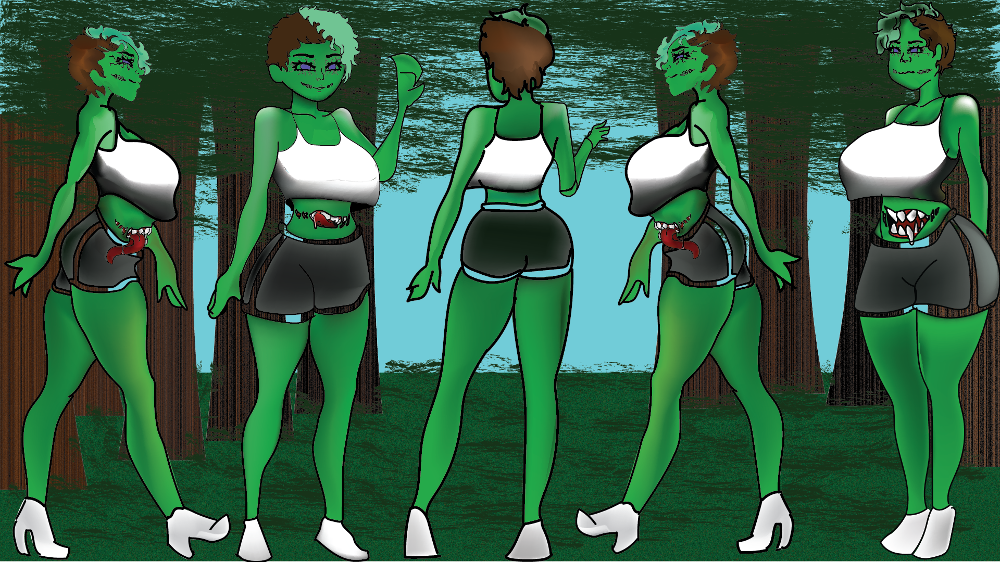
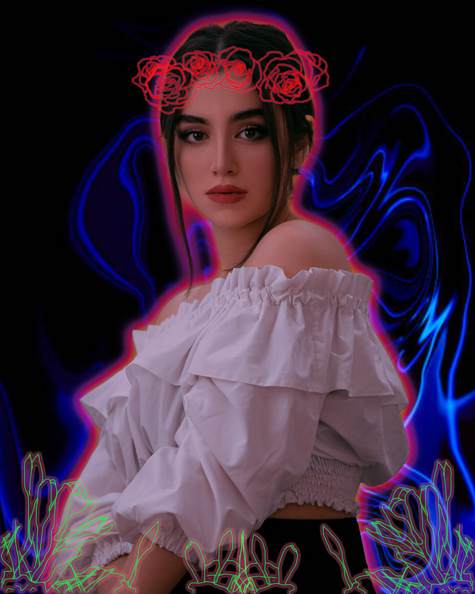
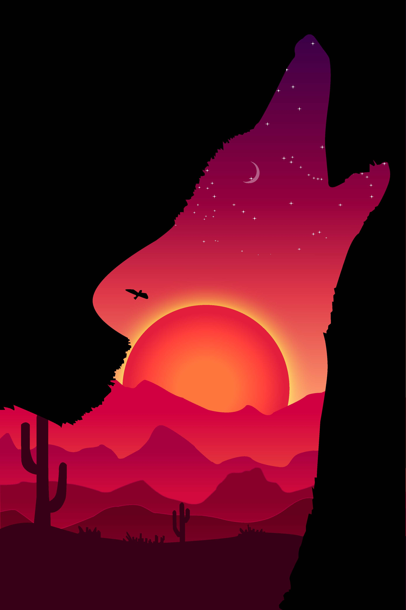
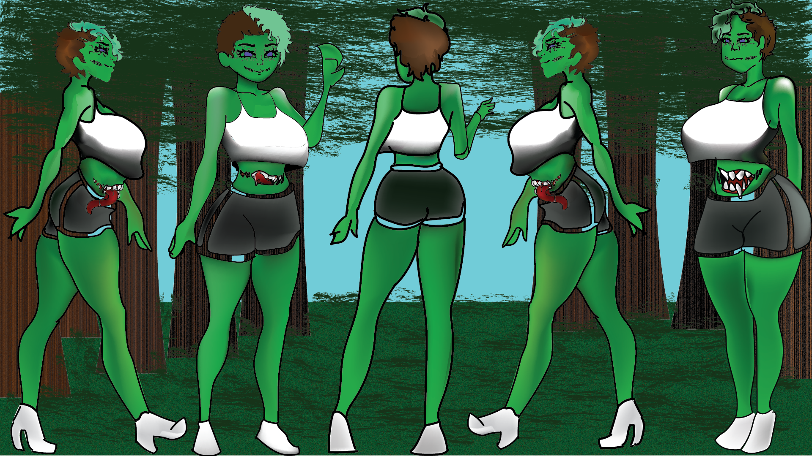
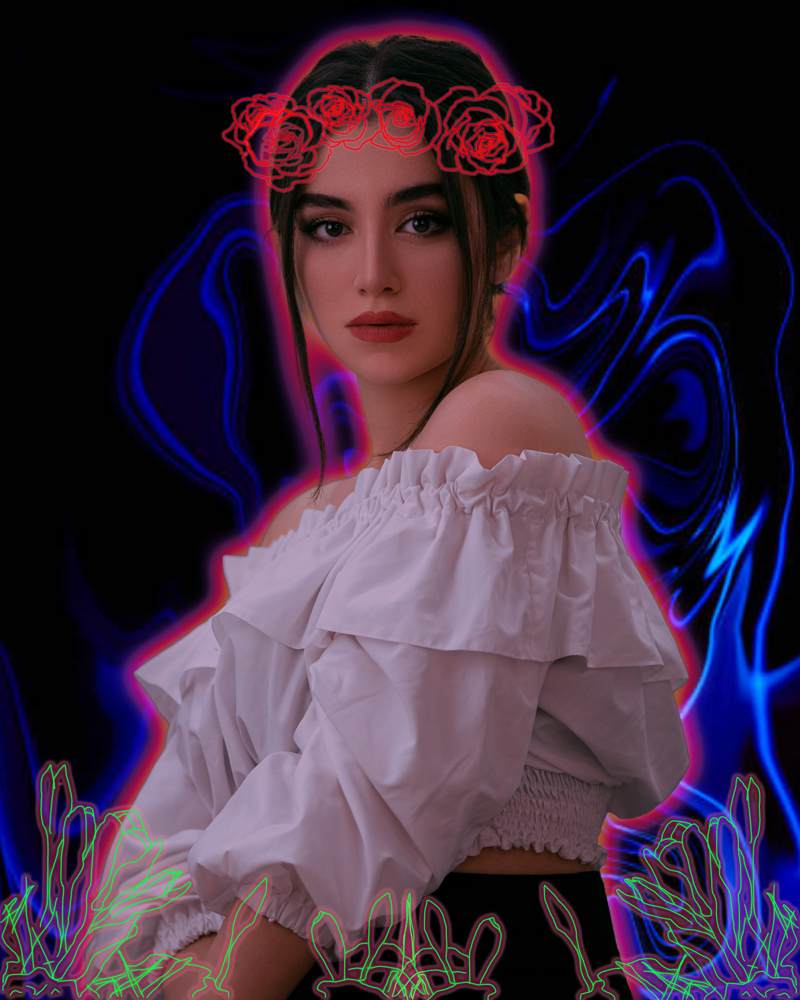
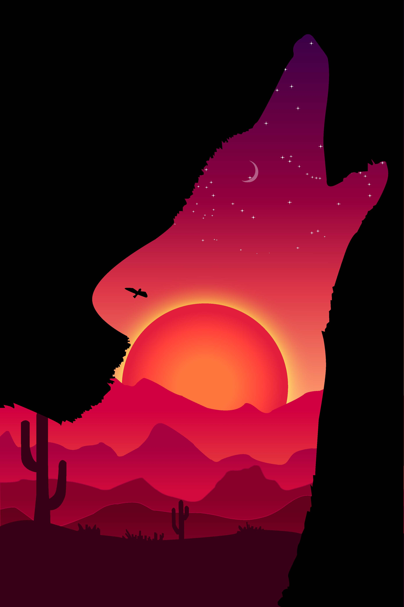

portrait of anit-bulling
Bullying is a reall think this protrait talks about anit-bullying
click here for more info
Bullying is a reall think this protrait talks about anit-bullying
click here for more info 






.png)

This is a portrait of me in middle school. In the middle school I went to Bullying was a common thing there. it was so bad that I wanted to stay home, because I knew what awaited there. The worst part is when the teachers did help. They just look at me and tell me to toughen up, or it's just words. But what they didn't know it was more than just words. They would pull out my hair, push me down the stair where I almost broke my arm. It was a life of hell! No one would help me, they just sat there and watch. Once I left that school I thought I was free but God was I wrong. High-school didn't treat me any better I thought I would have to worry about the students. But it was the teachers that I had to worry about too.
They would tell me "I wasn't enough" and that "I wouldn't go far with that silly art dream of yours". But I didn't let that get me down thank too middle school. I toughen up a lot and use their words for encouragement. I turned it around against them and started to work harder befor. Even tho the bullying didn't stop I still pushed more and went farther than befor. I made poster to show how far I gotten. And what great things I doing now. This poster proves to me that even tho I got kick down so many time. To never give up and that I can go far if I put my mind to it.
For the people out there that is suffer from bullying. Please don't give up you have achived so much to give up now. Even tho you think that nobody cares. There's always someone there for you. That loves you and think you're important and if you haven't known this already. You're meant for greatness nobody can be the better you. Only can push far, yes it's gonna hard but since when is it gonna easy. We can't acheve anything without working for it firt, but that dosen't mean to give up. It means you are where you at and that you're doing great.